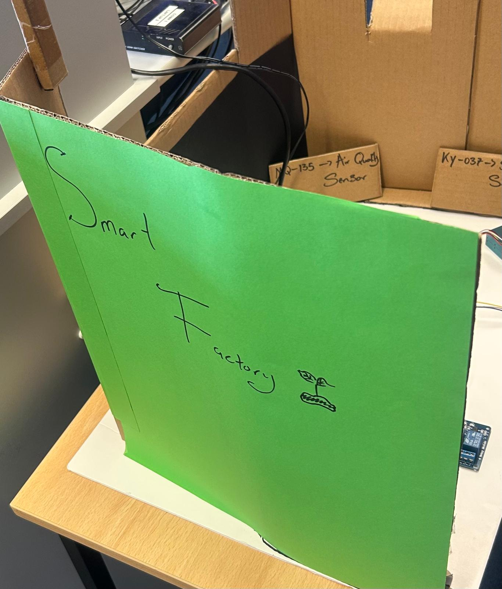

01

Research
SmartFactory Micro-Monitor started with a cost problem, not a technical one: enterprise ESG monitoring tools run upwards of €15,000 a year, putting real-time environmental compliance completely out of reach for small manufacturers. Research meant figuring out which six parameters actually matter for compliance — temperature, humidity, air quality, dust, noise, energy draw — and which sensors could measure them accurately for a fraction of that cost. The constraint wasn't "can this be built," it was "can this be built for under €100."